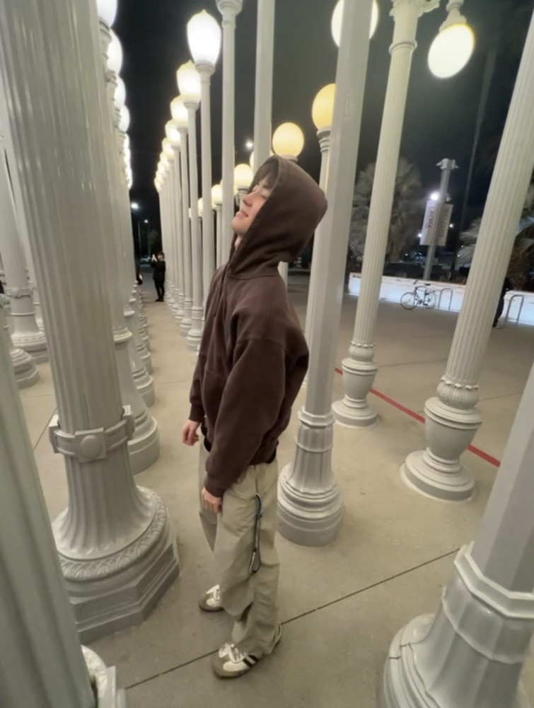

Info
I’m a product designer
based in Los Angeles, California.
My interest in design and craft started early. Growing up, I took classes in ceramics, silkscreen printing, photography and video editing at ArtCenter College of Design and the Armory Center for the Arts in Pasadena. That’s where I first began exploring art, and where I fell in love with making things by hand.
At UC Davis, I kept following that pull toward creativity and design, and found something new alongside it: a fascination with how people think, perceive and interact with the things around them, especially in digital spaces. As technology keeps evolving, I want to build intuitive products that are both functional and beautiful, that improve people’s lives, and that make the time we spend with screens feel more humane.
